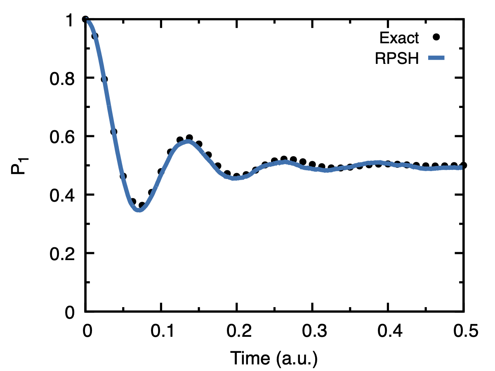

Spin-Boson Model (Debye Spectral Density)
This section demonstrates the simulation of the spin-boson model.
The model parameters must be specified in the following order: model \(\text{ spinboson} \quad \epsilon \quad \Delta \quad \text{enu}\)
The bath parameters are specified as: spectra \(\textit{ *bath-type*} \quad E_r \quad \omega_c \quad T\)
Note
All spin-boson parameters are given in energy unit of \(\text{cm}^{-1}\) and scale by the factor
enu.If
enu = 1, then all parameters are expressed in atomic units.
Prepare param.in
Prepare input file param.in for spin-boson model with appropriate model parameters.
#SHARP Pack INPUT PARAMETERS model spinboson 0.0 1.0 104.25 spectra debye 1.0 1.0 2.0 nParticle 100 nbeads 4 approx CA nmode matrix nsteps 20670 ntraj 1000 ncore 1 tstep 1.0 rsamp gaussian rmode norm rmap no vsamp gaussian VReverse always Vrescale BL rundtail Yes iprint 10 finish
Run Simulation
Run the simulation using one of the following methods:
# direct execution $ ./sharp.x # for running on a local machine $ sh job-script-local.sh #for submitting jobs on an HPC cluster (Slurm) $ sh job-script-hpc.sh
Plot Result
Use gnuplot script plot-pop.gnu to plot population dynamics.
#!/usr/bin/gnuplot set terminal pdf size 4in,3in enhanced color font 'Helvetica,16' set border lw 2.5 set tics scale 1.2 set multiplot layout 1,1 set xlabel 'Time (a.u.)' set ylabel 'P_1' set yr[0:1] set xr[0:0.5] heom = 'heom-result/exact-qutip-lambda1-d1-w1-t300.dat' set output 'fig-spinboson-pop.pdf' set key samplen 1.0 spacing 1.3 font "Helvetica, 14" plot heom every 25 u 1:2 w p lc 0 pt 7 ps 0.6 t'Exact',\ 'pop_diabat3.out' u (column(1)/41340):2 w l ls 6 lw 5 t'RPSH' Fig. 5 Population dynamics of spin-boson model at temperature 300 K and reorganization energy, \(E_r = 0.02\).
{kind=link}